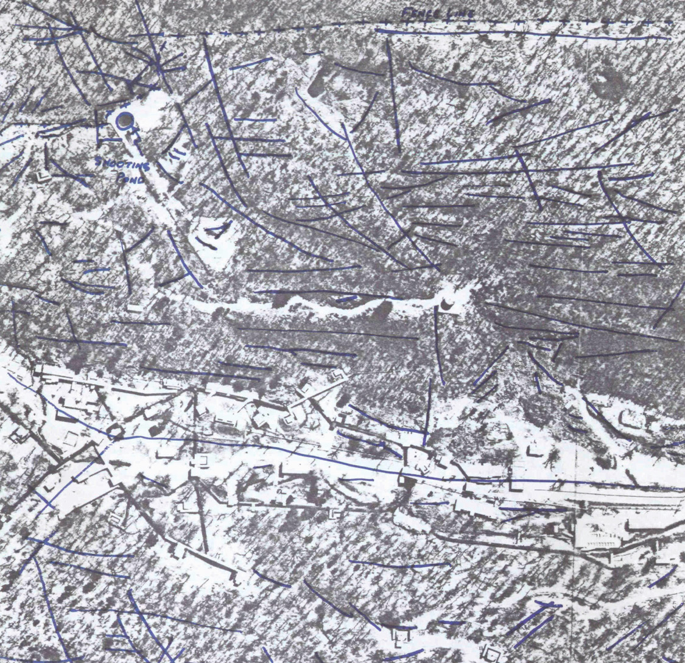

25
Left:
Traced map of geological fractures on the site from
Plate 14 in Environmental Protection Agency report #EPA/902/8-87-002, prepared by Malcolm S. Field in 1988. Map rotated so that north is up, AOC numbers added to identify shooting ponds.

AOC #1
AOC #5
AOC #57
Opposite:
Drawing of AOC #1 by the author, oblique aerial
imagery from Bing Maps
26